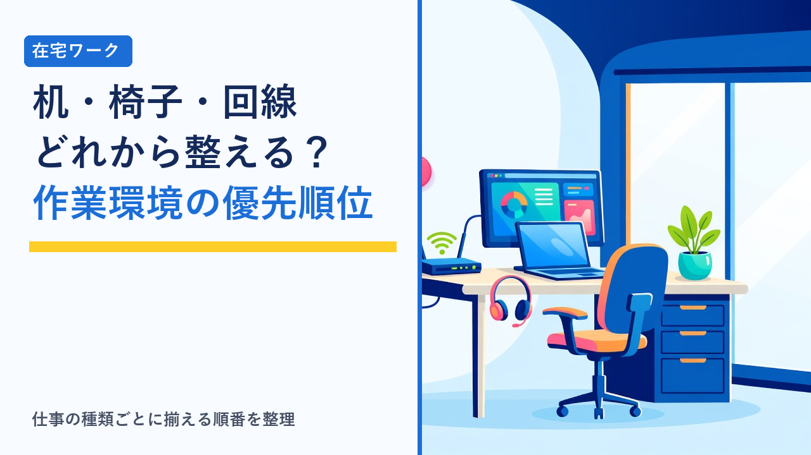

在宅ワークの作業環境づくり：机・椅子・ネット回線で優先度が高いのはどれ
2026-09-11 更新

在宅ワークを始めると、机・椅子・ネット回線・モニターなど「そろえたほうがよさそうなもの」が次々に目に入ります。しかし全部を一度に用意する必要はなく、受ける仕事の種類によって、優先して整えるべき設備は変わります。この記事では、作業環境を構成する要素を「不足したときに何が起きるか」という観点で比較し、費用をかける順番、あとから追加すればよいもの、経費の扱いまでを客観的に整理します。
優先順位は「仕事の種類」で決まる
同じ在宅ワークでも、文章を書く仕事と、オンライン会議が中心の仕事では、作業を止める要因が違います。まず自分の仕事がどのタイプに近いかを確認すると、優先順位がはっきりします。
① 文章・データ入力が中心
ライティング、データ入力、文字起こしなど。通信量は少なく、回線よりも長時間座り続けるための椅子と机の高さが作業効率と体への負担を左右します。
② 通話・オンライン会議が多い
オンラインアシスタント、事務代行、カスタマー対応など。回線の安定性とヘッドセットが業務の可否に直結し、途切れは相手側の信頼にも影響します。
③ 画像・動画など重いデータを扱う
デザイン、動画編集、大容量ファイルの納品など。上り速度の速い回線と、作業内容に見合う性能のPC・モニターが必要で、設備投資の比重が最も大きくなります。
初心者向けの案件は①が多く、この段階では高額な設備がなくても始められます。まず手持ちの機材で始められる仕事の種類は、在宅で始める副業、初期費用ゼロで始められるものまとめで整理しています。
机・椅子・回線・周辺機器の比較
それぞれの設備が「何に影響するか」と「不足したときに起きること」を並べると、自分にとっての優先度が判断しやすくなります。
| 項目 | 影響する範囲 | 不足したときに起きること | 優先度の目安 |
|---|---|---|---|
| ネット回線 | 会議の音声・映像、ファイル送受信、クラウド作業 | 会議の途切れ、納品の遅れ、作業の中断。仕事そのものができなくなる場合がある | ②③は最優先。①は現状で足りていれば後回し可 |
| 椅子 | 姿勢、集中の持続時間、腰や肩への負担 | 長時間作業で疲労が蓄積し、作業時間を延ばせない。体調面の影響が最も出やすい | ①で特に高い。毎日数時間座るなら全タイプで上位 |
| 机 | 作業面の広さ、機器の配置、姿勢 | 資料と機器を並べられない、高さが合わず肩や手首に負担がかかる | 高さと奥行きが合えば既存の机でも可。昇降式は後回し |
| 外付けモニター | 画面の広さ、複数資料の同時参照 | ウィンドウの切り替えが増え作業効率が下がるが、作業自体は可能 | ③は高い。①②は作業に慣れてから検討 |
| ヘッドセット・マイク | 通話の音質、周囲の雑音 | 相手に声が届きにくい、生活音が入る | ②は回線と並んで上位。①③は必要になってから |
| 照明・その他 | 目の疲れ、画面の見やすさ | 夕方以降の作業で目が疲れやすい | 後回しでよいが、手元の明るさは早めに確認 |
優先度はあくまで一般的な目安です。既に持っているものの状態や、作業する部屋の条件（Wi-Fiルーターからの距離、家族の生活動線など）によって順番は変わります。
ネット回線：確認すべきは「速度」より「安定性と上り」
回線で見落とされやすいのは、広告で強調される下り（ダウンロード）速度よりも、上り（アップロード）速度と通信の安定性が仕事では重要になる点です。オンライン会議では自分の映像と音声を送り続けるため上りが使われ、納品でも大きなファイルを送る側になります。
安定しやすい構成
- 固定回線（光回線など）を有線LANで接続
- データ容量に上限がない契約
- ルーターと作業場所が近い、または中継機で補強
- 会議中は同じ回線での動画視聴を家族と調整
注意が必要な構成
- モバイル回線やテザリングのみ（容量上限・時間帯で速度低下）
- ルーターから離れた部屋で無線接続
- 集合住宅で夜間に速度が落ちる回線
- カフェなどの公衆Wi-Fiでの業務データの扱い
判断の方法は単純で、実際に作業する時間帯に速度測定を行い、会議で音声や映像が途切れないかを確かめることです。速度が不足している場合でも、無線から有線に変えるだけで改善することがあり、回線契約の変更はその後で検討しても遅くありません。外出先で作業する可能性がある場合の通信の注意点は、公衆Wi-Fiは安全？カフェ・ホテルで動画を見る前に知っておきたい通信の話で整理しています。
椅子：体への影響が最も大きく、代替もしやすい
1日に数時間座る場合、椅子は設備の中で体への影響が最も大きい項目です。ただし「高い椅子を買えばよい」わけではなく、確認すべきは座面の高さを調整できるか、足の裏が床につくか、背もたれで腰が支えられるかの3点に集約されます。
この3点は、既存の椅子でも座面クッションや足置きで補える場合があります。まずは今の椅子で1〜2週間作業し、腰や肩に負担が出るようであれば、調整機能のある椅子を検討する順番が、出費を抑えつつ必要な投資を見極めやすい進め方です。肘置きの有無は、キーボード作業の多い①のタイプで手首の負担に関わるため、選ぶ際に確認しておくと違いが出ます。
机：高さと奥行きが合えば十分
机は「作業面の高さ」と「奥行き」の2点が合っていれば、専用のものである必要はありません。高さは座ったときに肘が自然に下りる位置、奥行きはノートPCと資料やキーボードを前後に並べられる程度が目安です。ダイニングテーブルは高さが合いにくいことがありますが、椅子側の調整で補える範囲であればそのまま使えます。
昇降式の机や幅の広い机は、作業に慣れて外付けモニターや資料の置き場が足りなくなってから検討しても間に合います。最初から大きな机を用意すると、置き場所と費用の両方で負担になりやすい項目です。
周辺機器は「作業を始めてから」で間に合う
外付けモニター・キーボード・マウス・照明・ヘッドセットといった周辺機器は、作業を始めてから「何が足りないか」が具体的に分かる項目です。順番の目安は次のとおりです。
- ヘッドセット・マイク：会議が中心の仕事では早い段階で必要になります。PC内蔵マイクは生活音を拾いやすく、相手側の聞き取りやすさに差が出ます。
- 外付けモニター：資料を見ながら入力する作業が多い場合に効果が大きい項目です。ノートPCのみで問題なく進むなら急ぐ必要はありません。
- キーボード・マウス：ノートPCを外付けモニターにつないだ段階で必要になることが多く、それまでは内蔵で足ります。
- 照明：手元と画面の明るさの差が大きいと目が疲れます。部屋の照明で足りているかは、夕方以降に作業してみて判断できます。
機材や家具をそろえる際は、「今の作業で実際に困っていること」を1つずつ解消する形で買い足すと、使わない設備を抱えにくくなります。価格帯やレビューを見比べながら選ぶ場合は、総合通販サイトで同じカテゴリの製品を並べて比較する方法が一般的です。
費用をかける順番と、経費の扱い
費用の考え方は「無料でできる調整 → 作業を止める要因の解消 → 効率を上げる投資」の順です。椅子の高さ調整や有線接続への変更、ルーターの位置替えは費用がかからず、それだけで解決することも少なくありません。そのうえで、会議が途切れる・体に負担が出るといった、仕事の継続に直接関わる項目から順に費用をかけます。
事業のために購入した机・椅子・周辺機器や、回線費用の事業で使う部分は、必要経費として扱える場合があります。備品は金額によって一括計上と減価償却に分かれ、回線や電気代のように私用と兼ねるものは事業割合で按分するのが一般的です。確定申告が必要になる所得の目安は在宅ワークの確定申告、いくらから必要？年間所得別の目安まとめで、領収書の管理や記帳の方法は在宅ワーカーが使いたい確定申告ツール・記帳アプリの選び方で整理しています。
選び方のポイント
- 先に仕事のタイプを決める：文章・データ入力中心か、会議中心か、重いデータを扱うかで、最初に整える設備は変わります。設備より先に、受ける仕事の方向性を決めるほうが無駄がありません。
- 回線は「実際の時間帯」で測る：契約上の最大速度ではなく、作業する時間帯の実測と会議での安定性で判断します。有線接続への変更は費用ゼロで試せる対策です。
- 椅子は調整できるかで選ぶ：価格ではなく、座面の高さ・足の接地・腰の支えの3点を確認します。既存の椅子でも、クッションや足置きで補えることがあります。
- 机は高さと奥行きが合えば流用可：昇降式や幅の広い机は、モニターや資料の置き場が足りなくなってから検討しても間に合います。
- 周辺機器は困ってから1つずつ：作業を始めると「何が足りないか」が具体的になります。想定で一式そろえるより、実際に困った順に買い足すほうが使わない設備を抱えません。
- 購入時の書類は保管する：経費として扱う可能性がある備品や回線費用は、領収書と契約書を按分の根拠とあわせて残しておきます。
環境が整ったら、次は案件の選び方です。初心者が最初の数件をどう選ぶかはスキマ時間の在宅ワーク、初心者が最初にやるべきことまとめで、応募時のプロフィールと提案文の書き方はクラウドソーシングのプロフィール・提案文の書き方、受注につながる項目まとめでそれぞれ整理しています。
よくある質問
在宅ワークを始めるとき、最初に買うべきものはどれですか？
受ける仕事の種類によって変わりますが、多くの場合は「買う」より先に「今あるものを調整する」段階があります。机と椅子は、椅子の高さやクッションで姿勢を整えられれば当面は使えることが多く、ネット回線も自宅の契約で速度と安定性が足りていれば追加投資は不要です。逆に、オンライン会議や大容量ファイルの送受信が多い仕事で回線が不安定な場合は、回線の見直しが最優先になります。まず1〜2週間実際に作業してみて、体の負担や作業の中断が起きた箇所から順に手を入れる方法が、無駄な出費を避けやすい進め方です。
ネット回線は光回線でないと在宅ワークはできませんか？
文章作成やデータ入力のように、送受信するデータ量が小さい仕事であれば、ホームルーターやモバイル回線でも作業自体は可能です。ただし、オンライン会議・動画や画像の納品・クラウド上での共同編集が多い仕事では、下りだけでなく上りの速度と通信の安定性が重要になり、時間帯によって速度が落ちる回線や、データ容量に上限がある契約では作業が止まる場合があります。判断の目安は、実際に使う時間帯に速度測定を行い、会議中に音声や映像が途切れないかを確認することです。可能であれば無線ではなく有線接続にするだけで安定性が改善することも少なくありません。
机や椅子、回線の費用は経費にできますか？
事業のために使う部分については、必要経費として扱える場合があります。机や椅子のような備品は、金額によって一度に経費にできるものと、減価償却として複数年に分けて計上するものに分かれます。ネット回線や電気代のように私用と兼ねているものは、事業で使う割合を合理的に説明できる形で按分するのが一般的です。取り扱いは所得の区分や申告方法によって異なり、制度も変更される可能性があるため、判断に迷う場合は税務署や税理士に確認することをおすすめします。領収書や契約書は、按分の根拠とあわせて保管しておくと申告時に困りません。